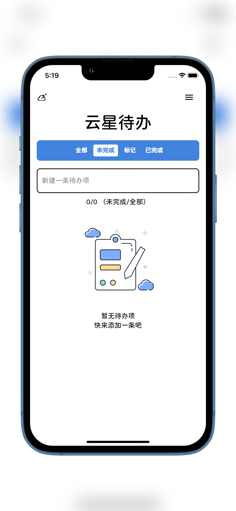
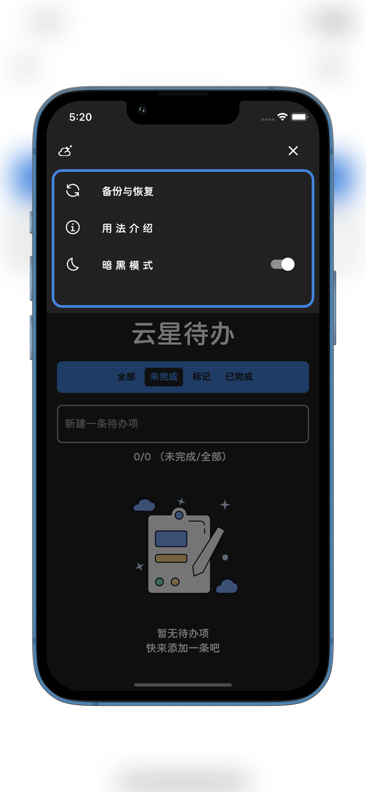
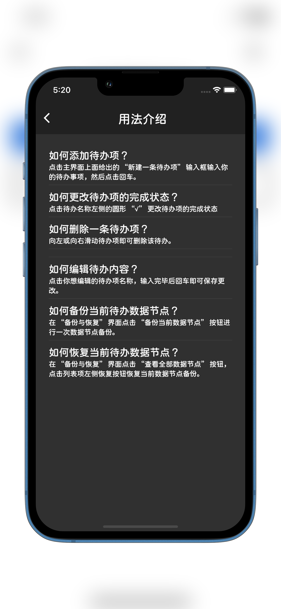

云星待办
欢迎使用云星待办
云星待办，帮助您培养习惯，完成目标，量化每日习惯，专治各类拖延症，提升个人能力与专注力！
用法介绍： Q：如何添加待办项？ A：点击主界面上面给出的“新建一条待办项”输入框输入你的待办事项，然后点击回车。 Q：如何更改待办项的完成状态？ A：点击待办名称左侧的圆形“√”更改待办项的完成状态 Q：如何删除一条待办项？ A：向左或向右滑动待办项即可删除该待办。 Q：如何编辑待办内容？ A：点击你想编辑的待办项名称，输入完毕后回车即可保存更改。 Q：如何备份当前待办数据节点？ A：在“备份与恢复”界面点击“备份当前数据节点”按钮进行一次数据节点备份。 Q：如何恢复当前待办数据节点？ A：在“备份与恢复”界面点击“查看全部数据节点”按钮，点击列表项左侧恢复按钮恢复当前数据节点备份。
  